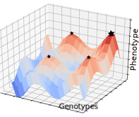
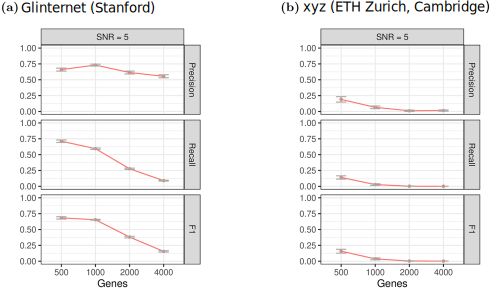
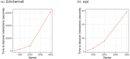
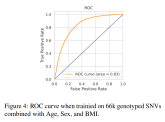
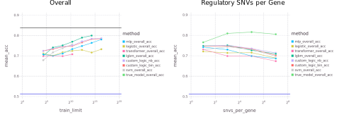

Model- and data-driven approaches for genotype-phenotype data
Alex Gavryushkin
The 33rd Annual Queenstown Molecular Biology Meeting (QMB 2023)
Model- VS data-driven paradigm
Model-based approaches to genotype-phenotype data
State of the art in 2018
 Kieran Elmes et al. Learning epistatic gene interactions from perturbation screens. 2021Problem #1: The hierarchy assumptions

Sarah Howles et al. Genetic variants of calcium and vitamin D metabolism in kidney stone disease. 2019
Problem #2: Scalability
Kieran Elmes et al. Learning epistatic gene interactions from perturbation screens. 2021
Kieran Elmes et al. A fast lasso-based method for inferring higher-order interactions
Problem #3 (unsolved!):
Model assumptions
$ f(x_1,\, \ldots,\, x_p) = \beta_0 + \sum_{i} x_i \beta_i + \sum_{i \le j} x_i x_j \beta_{i,j} $ $ + \sum_{i \le j \le k} x_i x_j x_k \beta_{i,j,k} + \ldots $Kieran Elmes et al. A fast lasso-based method for inferring higher-order interactions
SNVformer
Kieran Elmes et al. SNVformer: an attention-based deep neural network for GWAS data
"eQTL" simulations (work in progress)
bioDS lab @UCNZ

Thank you!